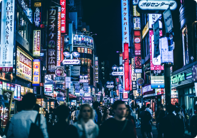
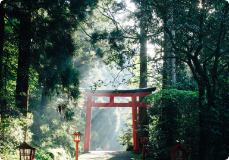
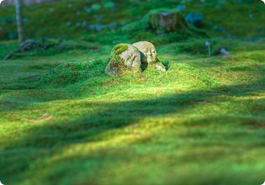

自分の魂を探す旅
現代社会では、人は忙しすぎて心の融合を抑えきれず、心理的な公式の道を見つけることができず、間違った方向を選択します。自然界に注意を向けて自分自身の答えを見つける人は少なくなり、無視します。
自分の魂を探す旅
現代社会では、人は忙しすぎて心の融合を抑えきれず、心理的な公式の道を見つけることができず、間違った方向を選択します。自然界に注意を向けて自分自身の答えを見つける人は少なくなり、無視します。
人々の心の深さを反映する
心理的な安らぎ、そして複雑な現代社会はそれを不可能にします。自分の魂のバランスをとることは、人々が自然の慰めの「山」と「水」を探求し、自分の魂を洗い、自分の真実を探し、自己価値があり、最も真実であることを反映しています。
-

自分の魂を探す旅
現代社会では、人は忙しすぎて心の融合を抑えきれず、心理的な公式の道を見つけることができず、間違った方向を選択します。自然界に注意を向けて自分自身の答えを見つける人は少なくなり、無視します。
-

人々の心の深さを反映する
ただ漠然と、無意識に日々を送っている人は少なくありません。ある日、ふとわが身を振り返って、どれだけの時間が知らず知らずのうちに経ってしまったかに気づき、愕然とする。
-

習慣的なライフスタイル
もともとはデンマークの長く暗い冬をうつうつとせず乗り越えられるように、あたたかい色のろうそくを灯したり、気の置けない仲間で集まって一緒にくつろぎのひとときを過ごしたりする習慣から始まりました。
生き方が働き方
© 2021 Sanshisuimei.